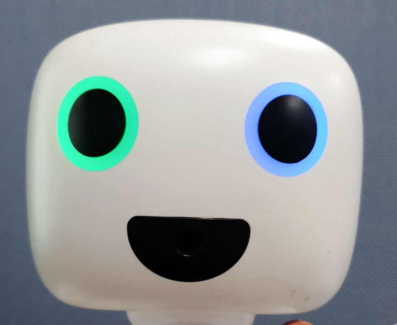

Device Simulator¶
파이보의 device를 제어할 수 있는 툴 입니다.
디바이스 부품(neopixel, battery, dc, button, pir, touch)을 제어하거나 상태를 확인할 수 있습니다.
Chrome브라우저 사용을 권장합니다.
사용 방법
$ cd ~/openpibo-tools/device-simulator
$ sudo python3 main.py --port 8888
프로그램을 실행합니다.
--port: 연결할 포트를 입력합니다. 만약 설정하지 않으면, 기본 포트는8888입니다.이후
http://<PIBO IP>:8888에 접속
죄측 입력 바를 조작하여 Neopixel 을 제어할 수 있습니다.


우측 테이블에서는 디바이스 상태 정보를 확인할 수 있습니다.
배터리 잔량
전원케이블 연결 상태
전원버튼 누름상태
PIR센서 신호
터치센서 신호